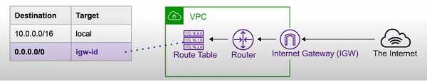

|
|
i morgen |
VPC
Virtual Provide Network
Contents
What is it?
- Provision a logically isolated section of the AWS Cloud where you can launch AWS resources in a virtual private network that you define
Core Components
- Internet Gateway (IGW)
- Virtual Private Gateway (VPN gateway)
- Routing Tables
- Network Access Control List (NACLs) - stateless
- Security Groups (SG) - stateful
- Public Subnets
- Private Subnets
- NAT Gateway
- Customer Gateway
- VPC Endpoints
- VPC Peering
Key Features
- Region specific - cannot span regions
- Can create 5 VPC's per region
- Every region comes with a default VPC
- 200 subnets possible per VPC
- You must provide IPv4 CIDR block. IPv6 CIDR block is optional
- Free
- VPC
- Route Tables
- NACLs
- Internet Gateway
- Security Groups mand Subnets
- VPC Peering
- Not Free
- NAT Gateway
- VPC Endpoints
- VPN Gateway
- Customer Gateway
Default VPC
- Every region has a default VPC so you can immediately deploy instances
- Default VPC has specific configurations that make it unique
- Size of /16 IPv4 CIDR block (172.31.0.0/16)
- Size of /20 default subnet in each AZ
- Internet Gateway connected to your default VPC
- Security Group associated to your default VPC
- NACL associated with your default VPC
- DHCP options set for your AWS account with your default VPC
- *When you create a VPC, it automatically has a main route table
Default VPC
- Subrange of IP's in your VPC
VPC Peering
- Allows you to connect one VPC to another over a direct network route using private IP addresses
- Instances on peered VPC's behave just like they were on same network
- Peering uses Star Configuration: 1 Central VPC - 4 other VPCs
- No transitive peering (peering must take place directly between VPC's)
- No overlapping CIDR blocks
{kind=link}
{kind=link}
Route Tables
- Route tables are used to determine where network traffic is directed
- Each subnet in your VPC must be associated with a route table
- A subnet can only be associated with one route table at a time, but you can associate multiple subnets with one route table
Internet Gateways
- IGW allows your VPC to access the Internet and does two things
- Provide a target in your VPC route tables for internet routable traffic
- Perform network address translation (NAT) for instances that have been assigned IPv4 addresses
- In the below example, local stays within the VPC and internet traffic is routed to igw-id 
Bastions/Jumpbox
- EC2 instances which are security hardened and designed to help you gain access to EC2 instances via SSH or RCP in a private subnet
- System Manager's Sessions Manager replaces the need to Bastions
- Recommended but bastions are still used in some cases.
- Illustration
{kind=link}
Direct Connect
- AWS Direct Connect is the AWS solution for establishing dedicated network connections for on-premises locations to AWS
- Lower bound = 50M-500M
- Upper bound = 1gb-10gb
VPC Flow Logs
- Allows you to capture information about the IP traffic going to and from network interfaces in your VPC
- Flow logs can be used to troubleshoot network connectivity issues, monitor the traffic patterns of your instances, and enforce network security policies.
VPC Endpoints
VPC Endpoints
What are they?
- Allow you to privately connect your VPC to other AWS services and VPC endpoint services
- Eliminates the need to IGW, NAT device and VPN
- Instances in the VPC do not require public IP address to communicate with service providers
- Traffic between your VPC and other services does not leave AWS network
- There are two types of VPC Endpoints
- Interface Endpoints
- Elastic Network Interfaces (ENI) with private IP addresses
- Serve as an entry point for traffic going to a supported device
- Cost
- Per VPC endpoint per AZ ($/hour): 0.01
- Per GB processed: 0.01
- Gateway Endpoints
- Gateway that is a target for a specific route in your route table
- Used for traffic destined for a supported AWS service
- Primary use case: S3 and DynamoDB
- Pricing: Free
- Illustration
{kind=link}